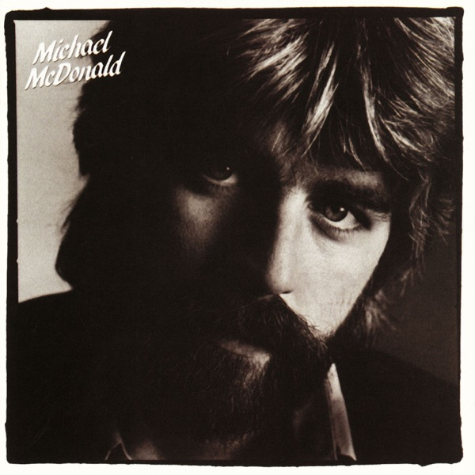

If That's What It Takes
Michael McDonald
Upgrade idea: Your 1982 Specialty pressing is an excellent original cut. The ultimate audiophile vinyl upgrade is the 1983 Mobile Fidelity Sound Lab (MFSL 1-086) "Original Master Recording," pressed on JVC Super Vinyl in Japan. For high-resolution digital playback on your Sony UBP-X700, look for the 2013 Audio Fidelity hybrid SACD (AFZ 164) mastered by Kevin Gray.
- Original release
- 1982
- Pressing year
- 1982
- Country
- US
- Format
- Vinyl LP, Album, Stereo (Specialty Pressing)
- Label / Cat#
- Warner Bros. Records – 9 23703-1 / Warner Bros. Records – 1-23703
- Genres
- Rock
- Styles
- Soft Rock, Pop Rock, Soul
- Discogs release
- 9407172
- Discogs master
- 157694
- Apple Music
- If That's What It Takes
- Wikipedia
- If That's What It Takes
Production notes
Tracklist (Discogs)
| A1 | Playin' By The Rules | 4:55 |
| A2 | I Keep Forgettin' (Every Time You're Near) | 3:39 |
| A3 | Love Lies | 3:21 |
| A4 | I Gotta Try | 3:53 |
| A5 | I Can Let Go Now | 2:54 |
| B1 | That's Why | 4:24 |
| B2 | If That's What It Takes | 4:17 |
| B3 | No Such Luck | 3:44 |
| B4 | Losin' End | 4:11 |
| B5 | Believe In It | 4:41 |
Tracklist (Apple Music)
| 1 | Playin' By the Rules | 5:00 |
| 2 | I Keep Forgettin (Every Time You're Near) | 3:42 |
| 3 | Love Lies | 3:25 |
| 4 | I Gotta Try | 3:55 |
| 5 | I Can Let Go Now | 2:54 |
| 6 | That's Why | 4:26 |
| 7 | If That's What It Takes | 4:20 |
| 8 | No Such Luck | 3:48 |
| 9 | Losin' End | 4:15 |
| 10 | Believe In It | 4:40 |
Personnel & credits
- Jerry Hey — Arranged By [Horn Arrangements]
- Marty Paich — Arranged By [String Arrangements]
- Jeff Adamoff — Art Direction, Design
- Joan Parker — Coordinator [Production]
- Kathy Walker — Coordinator [Production]
- Vicki Fortson — Coordinator [Production]
- Donn Landee — Engineer [Basic Track Engineer]
- Jim Isaacson — Engineer [Basic Track Engineer]
- Lee Herschberg — Engineer [Basic Track Engineer]
- Bobby Hata — Engineer [Mastering Engineer]
- Lee Herschberg — Engineer [Mixdown Engineer]
- Donn Landee — Engineer [Overdub Engineer]
- Jim Isaacson — Engineer [Overdub Engineer]
- Lee Herschberg — Engineer [Overdub Engineer]
- Mark Linett — Engineer [Overdub Engineer]
- Ken Deane — Engineer [Second Engineer]
- Stephen McManus — Engineer [Second Engineer]
- Irving Azoff — Management [Direction]
- Jim Shea — Photography By
- Lenny Waronker — Producer
- Ted Templeman — Producer
- Michael Boddicker — Synthesizer [Additional]
- Paul Medeiros — Technician [Keyboard Technician]
Identifiers
- Barcode: 07599237031 (Scanned)
- Barcode: 0 7599-23703-1 (Text)
- Pressing Plant ID: E A S T (Debossed on labels)
- Rights Society: ASCAP (A1 to B5)
- Rights Society: BMI (A1, A2)
- Matrix / Runout: 1-23703-A SR-3 SP 1-1 (Side A variant 1)
- Matrix / Runout: 0-1sml.l 1-23704-B S2 [Allied 'ɑ' logo] B-16965-S2 △·2074-X + SLM (Side B variant 1)
- Matrix / Runout: 1-23703-A SR.4 SP 1-1 (Side A variant 2)
- Matrix / Runout: 1-23704-B S1 [Allied 'ɑ' logo] B-16965-S1 SP △ 2074-X 0-1 sml-1 + SLM (Side B variant 2)
- Matrix / Runout: △2074 [Allied 'ɑ' logo] B-16964•SH6 1-23703-A SH-6 0-1sml•l + SLM (Side A variant 3)
- Matrix / Runout: 1-23703-B SR-4 SP 1-2 (Side B variant 3)
- Matrix / Runout: 1-23703-A SR-3 SP 1-1 ( Side A variant 4)
- Matrix / Runout: 1-23704-B S1 [Allied 'ɑ' logo] B-16965-S1 SP △·2074-X 0-1sml-1 + SLM (Side B variant 4)
- Matrix / Runout: 1-23703-A SH-6 0-1SML.2 + SLM △2074 [Allied 'ɑ' logo] B-16964.SH6 ( Side A variant 5)
- Matrix / Runout: 1-23703-B S1 [Allied 'ɑ' logo] B-16965-S1 SP △2074-X 0-1SML-2 + SLM (Side B variant 5)
- Matrix / Runout: 1-23703-A SR-3 SP 1-1 SM1-1 (Side A variant 6)
- Matrix / Runout: 1-23703-B S2 [Allied 'ɑ' logo] B-16965-S2 △2074-X + SLM 0-1SM1-2 (Side B variant 6)
Notes
[l=Specialty Records Corporation] pressing denoted by "SP" in runouts and "E A S T" debossing on labels near spindle hole.
Side B pressed with metalwork supplied by [l=Allied Record Company], identifiable by "ɑ" stamp and "B-#####" string in runout.
World Song Publishing Inc. shown on release as World Song Pub. Inc.
Recorded at Warner Bros. Recording Studio, N. Hollywood, CA and Sunset Sound, Hollywood
Strings recorded at Oceanway Recording, Hollywood
Mastered at Warner Bros. Recording Studio
Made in U.S.A.
Runouts are etched except for the stamped [Allied 'ɑ' logo]
Released on August 3, 1982 by Warner Bros. Records, If That’s What It Takes is the debut solo studio album by Michael McDonald. Following his highly successful tenure fronting the Doobie Brothers (which ended with the band’s temporary dissolution that same year), the album solidified McDonald as a premier voice of the L.A. Pop and “blue-eyed soul” sound of the early 1980s. Co-produced by Ted Templeman and Lenny Waronker alongside McDonald, the record boasts an exceptionally polished production that has long made it a favorite among audiophiles. The lead single, “I Keep Forgettin’ (Every Time You’re Near)”—co-written with Ed Sanford—became a massive crossover hit, defined by Greg Phillinganes’ clavinet/Rhodes groove, Louis Johnson’s bassline, and a distinct drum performance by Jeff Porcaro.
The album features a legendary roster of L.A. session musicians, including Steve Gadd and Jeff Porcaro sharing drum duties, Willie Weeks and Louis Johnson on bass, Steve Lukather and Dean Parks on guitars, and Tom Scott contributing memorable saxophone work. Horn arrangements were handled by Jerry Hey, and Marty Paich provided the lush string arrangements. The album’s clean, dynamic, and meticulously layered tracks are widely considered a masterclass in early-80s West Coast pop studio craftsmanship.
About this 1982 Specialty pressing (LP, Stereo): Warner Bros. Records catalog
9 23703-1(sleeve/spine) and1-23703(labels), barcode07599237031. This pressing was manufactured by the Specialty Records Corporation (indicated by theSPsuffix on the labels and the Specialty stampers).Deadwax runout details confirm the classic L.A. mastering and pressing chain for this copy. Side A carries the matrix
1-23703-A SR-3 SP 1-1, indicating it was cut at Westlake with theSR-3mastering designation and pressed from the first set of stampers at Specialty.Your copy’s Side B runout contains the matrix
1-23704-B S1 B-16965-S1 SPalongside the Allied Record Company logo ([Allied ɑ logo]),SLM(Sheffield Lab Matrix), and the delta symbol△(which looks like a pyramid) followed by2074-X. This documents the shared manufacturing chain between the Allied plating facility, Sheffield metalwork, and the Specialty pressing plant common for major Warner Bros. releases of the era.